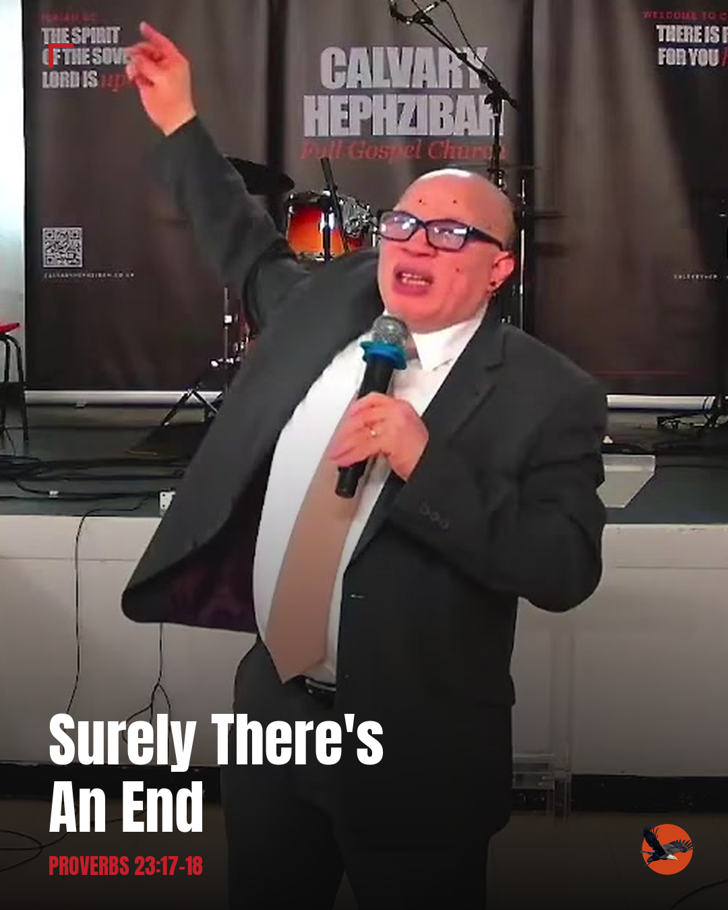
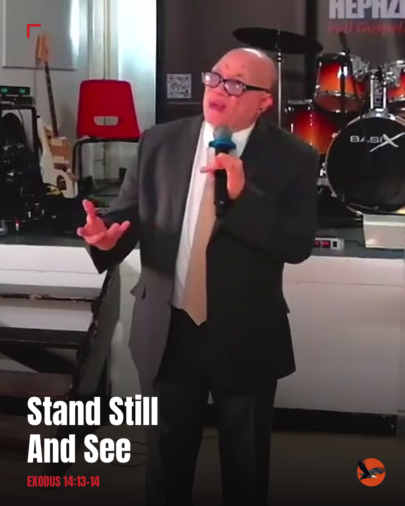
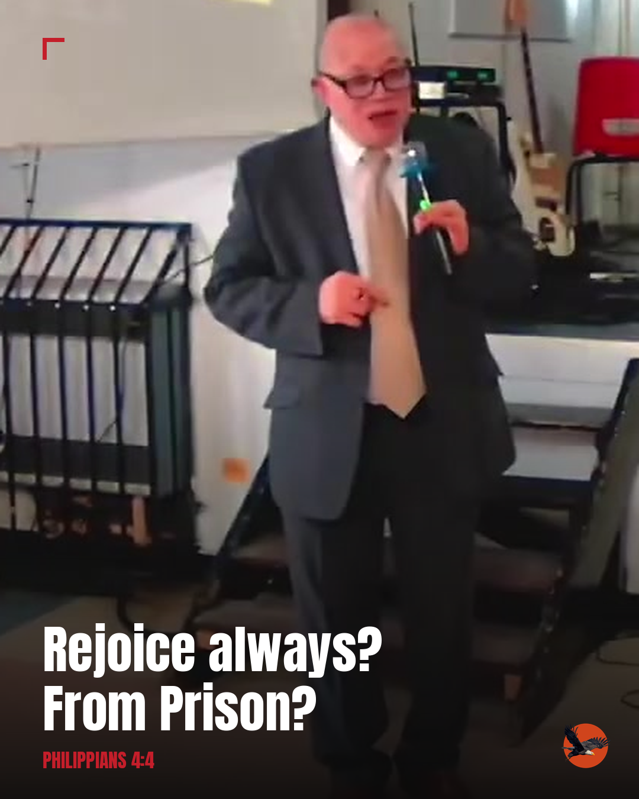
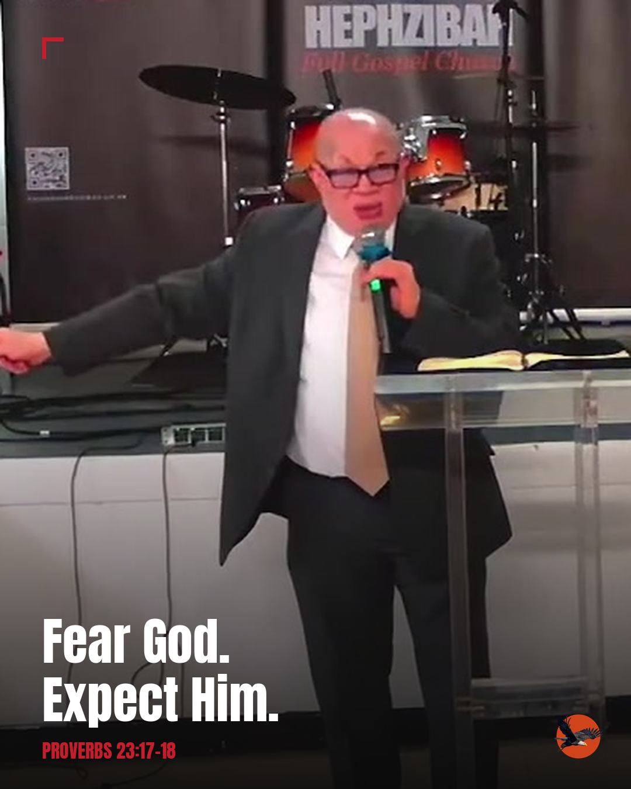
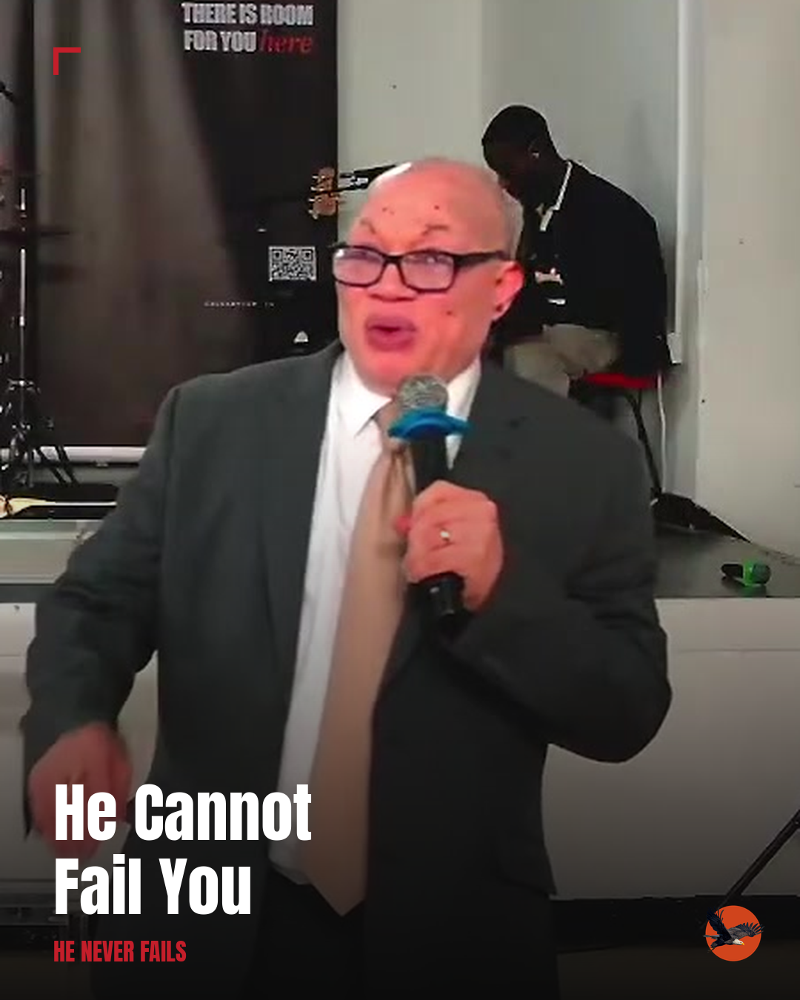

Bishop Henry Emmanuel · Sunday 30 August 2026 · 5 single-image posts
⚠ Two moments from this sermon are deliberately left out of this set: the opening
family-reunion illustration (real vs. hypothetical needs confirming with Bishop
Emmanuel before any public use) and the angel-gift testimony (involves a named-only-
as-a-friend pastor, not a public figure). Both are logged in the sermon-library
database if you want to revisit them separately.

#1
Surely There's An End
Proverbs 23:17-18
Ever feel like you've been waiting so long you've stopped expecting anything to change?
Bishop Henry Emmanuel preached on a promise that doesn't come with a maybe attached to it: "Surely there is an end, and thine expectation shall not be cut off." Not "maybe it'll work out." Surely.
The waiting isn't proof it's not coming. It's just the part before it arrives.
Save this for the day you need reminding.
"He Never Fails" — search YouTube for Calvary Hephzibah for the full message.
#faith #hope #manchester #church #calvaryhephzibah

#2
Stand Still And See
Exodus 14:13-14
Sometimes the only instruction God gives you is: stop trying to fix it yourself.
That's what Moses told a terrified nation trapped at the Red Sea, enemy behind them, nowhere to run. Stand still. Watch what God does. One chapter later, they're singing about a victory they didn't have to fight for.
Sometimes faith looks less like doing more, and more like stepping back.
"He Never Fails" — search YouTube for Calvary Hephzibah for the full message.
#faith #manchester #church #calvaryhephzibah #trust

#3
Rejoice Always? From Prison?
Philippians 4:4
The man who told a church to "rejoice always" wrote those words from a prison cell.
Not after things got better. While he was locked up, by the very people he was writing to. His joy wasn't about his circumstances. It was about where he genuinely believed the story was headed.
That's a very different kind of joy than "everything's fine."
"He Never Fails" — search YouTube for Calvary Hephzibah for the full message.
#faith #joy #manchester #church #calvaryhephzibah

#4
Fear God. Expect Him.
Proverbs 23:17-18
"Fear of God" sounds like it should mean anxiety. Bishop Henry Emmanuel preached it the other way round: it means expecting Him. Staying near Him. Trusting He literally cannot fail you.
Different posture completely once you see it that way.
"He Never Fails" — search YouTube for Calvary Hephzibah for the full message.
#faith #church #manchester #calvaryhephzibah

#5
He Cannot Fail You
Closing
If you only remember one thing from this Sunday: God's word doesn't depend on you feeling ready for it to come true.
It depends on Him. And He's never once failed to keep it.
"He Never Fails" — Bishop Henry Emmanuel, Calvary Hephzibah. Search YouTube for the full message.
#faith #hope #church #manchester #calvaryhephzibah